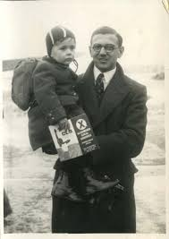

| Inicio | Logros | Galeria | Contacto |
Nicholas Winton |
|||
Nicholas Winton was a British humanitarian best known for organizing the rescue of 669 mostly Jewish children from Nazi-occupied Czechoslovakia in 1939. His effort became known as part of the Kindertransport. He arranged trains, visas, and foster families in the UK—largely in secret. His actions didn’t become widely known until the late 1980s, when his wife discovered documents detailing the rescue. A famous 1988 BBC program revealed his story publicly, bringing many of the survivors (“Winton’s children”) together with him. Winton was later knighted and became a symbol of courage and moral responsibility in times of crisis. In late 1938, Winton visited Prague at the request of a friend working with refugees. He saw thousands of families fleeing Hitler’s expanding control and realized that many children were in immediate danger.Winton was invited to a BBC program, “That’s Life!”, unaware that the audience included many of the people he had rescued as children. Winton died in 2015 at the age of 106. The people he saved have gone on to form a vast “Winton family” of thousands of descendants. |
|||
|  | |||
Education & Career
🚆 The Rescue Operation in DepthWinton’s rescue mission was not an official government effort — it was a civilian operation improvised from scratch. This is part of what makes it extraordinary. |
|||